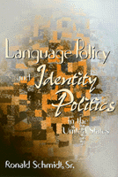

<body bgcolor="#FFFFFF" text="#000000" link="#0000FF" vlink="#CC0000" alink="#CC0000"><center><hr width="350" size="1" align="center" noshade>An engaging discussion about the use of English and other languages in the United States<hr width="350" size="1" align="center" noshade><p><a href="https://cdcshoppingcart.uchicago.edu/Cart/ChicagoBook.aspx?ISBN=9781566397544&&PRESS=temple" target="_top">Buy this book!</a> | <a href="https://cdcshoppingcart.uchicago.edu/Cart/Cart.aspx?PRESS=temple" target="_top">View Cart</a> | <a href="https://cdcshoppingcart.uchicago.edu/Cart/Cart.aspx?PRESS=temple" target="_top">Check Out</a></p><p></p></center><!--none//--><h1>Language Policy and Identity Politics in the United States</h1>
<h3>Ronald Schmidt, Sr.</h3>
<P>cloth 1-56639-754-5 $75.50, Apr 00, <FONT COLOR=#990033>Out of Stock Unavailable</FONT>
<br>paper 1-56639-755-3 $35.95, Apr 00, <FONT COLOR=#990033>Available</FONT>
<br>Electronic Book 1-43990-609-2 $35.95 <FONT COLOR=#990033>Out of Stock Unavailable</FONT>
<BR> 296 pp
6x9
14&nbsp;tables
</P><h3 align="center"><P><font color="#996633">"Best Book Award" from the American Political Science Association Section on Race, Ethnicity and Politics for the category of "Public Policies, Legal and Social Analysis of Racial and Ethnic Politics",
2001</font></P>
</H3>
<BLOCKQUOTE><I>"Finally, a study that is at one and the same time understandable and scholarly, factual and ethical, pluralist and integrationist, and sensitive to the often disregarded overlap between class, race and ethnicity, a study that sympathetically examines all sides of the American language policy issue and finds that these sides can and should come together productively, so that both pluribus and unum will obtain."</I>
<BR>&#151<B>Joshua A. Fishman</B>, Ph.D., editor of <I>Language and Ethnic Identity</I>, Oxford University Press<I></I></BLOCKQUOTE>
<P>Well over thirty million people in the United States speak a primary language other than English. Nearly twenty million of them speak Spanish. And these numbers are growing. Critics of immigration and multiculturalism argue that recent government language policies such as bilingual education, non-English election materials, and social service and workplace "language rights" threaten the national character of the United States. Proponents of bilingualism, on the other hand, maintain that, far from being a threat, these language policies and programs provide an opportunity to right old wrongs and make the United States a more democratic society.
<P>This book lays out the two approaches to language policy&#151linguistic assimilation and linguistic pluralism&#151in clear and accessible terms. Filled with examples and narratives, it provides a readable overview of the U.S. "culture wars" and explains why the conflict has just now emerged as a major issue in the United States.
<P>Professor Schmidt examines bilingual education in the public schools, "linguistic access" rights to public services, and the designation of English as the United States' "official" language. He illuminates the conflict by describing the comparative, theoretical, and social contexts for the debate. The source of the disagreement, he maintains, is not a disagreement over language per se but over identity and the consequences of identity for individuals, ethnic groups, and the country as a whole. Who are "the American people"? Are we one national group into which newcomers must assimilate? Or are we composed of many cultural communities, each of which is a unique but integral part of the national fabric? This fundamental point is what underlies the specific disputes over language policy. This way of looking at identity politics, as Professor Schmidt shows, calls into question the dichotomy between "material interest" politics and "symbolic" politics in relation to group identities.
<P>Not limited to describing the nature and context of the language debate, <I>Language Policy and Identity Politics in the United States</I> reaches the conclusion that a policy of linguistic pluralism, coupled with an immigrant settlement policy and egalitarian economic reforms, will best meet the aims of justice and the common good. Only by attacking both the symbolic and material effects of racialization will the United States be able to attain the goals of social equality and national harmony.
<BR>&nbsp;<h2>Excerpt</h2><P>Excerpt available at <a href="http://www.temple.edu/tempress">www.temple.edu/tempress</a></p>
<BR>&nbsp;<h2>Reviews</h2>
<p><i>"In </I>Language Policy and Identity Politics in the United States<I>, Schmidt provides an innovative approach to considering how issues of education, linguistic access to political and civil rights, and English as the official language are centrally tied to understandings of national identity."</i>
<br>&#151<b>Luis Fraga</b>, Associate Professor of Political Science, Stanford University
<p><i>"This book is a major contribution to an understanding of language conflicts. It shows in a very insightful way that, beyond the controversies over specific issues and policies, such conflicts involve confrontations between socio-political values and diagnoses of the implications of ethno-linguistic diversity for the social order. Schmidt's analysis also makes sense of an enigma: Why is language a source of conflict in a society in which the national language is clearly not threatened?"</i>
<br>&#151<b>Raymond Breton</b>, Professor Emeritus, University of Toronto
<p><i>"Professor Schmidt's thought-provoking and insightful book offers a significant contribution to our critical understanding of language concerns and identity politics, not simply as primordial attachments, but as important initiatives towards the redefinition and reconstruction of society itself. In the process, he compels our respectful recognition of the varied and valuable ways of being human in the world."</i>
<br>&#151<b>Dr. Maulana Karenga</b>, Professor and Chair, Department of Black Studies, California State University, Long Beach and author of <I>Odu Ifa: The Ethical Teachings</I>
<p><i>"Moving beyond analysis to specific plans, [Schmidt] provides us with our national agenda for the new millennium. He enables us to see the dawning of </I>identity politics<I> as a high priority in our new political understanding of the United States."</i>
<br>&#151<b>David F. Marshall</b>, Professor of English, Linguistics, and Peace Studies, University of North Dakota
<p><I>"[A] comprehensive examination of American language policy debates."</I>
<br>&#151<b><I>Journal of Politics</I></b>
<p><i>"This comprehensive and carefully researched book fills a void in the literature in this area; it provides a balanced overview of the issues to identity politics. Insightful and challenging, it constitutes a significant contribution to the language policy debate."</i>
<br>&#151<b><i>Journal of International Migration and Integration</i></b>
<p>Read a <a href="../authors/1505_review.pdf">review</a> from <I>Contemporary Sociology</I>, Volume 30.6 (November 2001), written by Krista B. McQueeney (pdf).
<p>Read a <a href="../authors/1505_review2.pdf">review</a> from <I>Journal of American Ethnic History</I>, Volume 20.3 (Summer 2001), written by Juan F. Perea (pdf).
<p>Read a <a href="../authors/1505_review3.pdf">review</a> from <I>Issues in Applied Linguistics</I>, Volume 12.2, written by Aneta Pavlenko (pdf).
<p><i>"Examining the relationship between language, identity, and power dynamics in American history, this work illuminates deep-rooted tensions behind current debate over language policy in the United States.... Schmidt argues that racial oppression in early America relied in part on 'the devaluation and attempted destruction of cultural practices�including language.'... Schmidt highlights conflict around bilingual education and efforts to make English the official language of the United States. This history places current debate on language policy in context."</i> <br>&#151;<b><i>Pennsylvania Legacies</i></b>
<BR>&nbsp;<h2>Contents</h2><P>
<p>Acknowledgments
<br>Introduction: A Politics of Language in the United States?
<p><b>Part I: The Issues and the Context</b>
<br>1. Language Policies in Conflict: An Overview
<br>2. Making Sense of Language Policy Conflict
<br>3. The Social Foundations of U.S. Language Politics
<p><b>Part II: The Arguments</b>
<br>4. Historical Perspectives on U.S. Identity Politics and Ethnolinguistic Inequality
<br>5. Language Policy and Equality: The Search for Justice
<br>6. Language Policy and National Unity: The Search for the Common Good
<p><b>Part III: Critique and Reform</b>
<br>7. Flaws at Every Turn: A Critique of Assimilationist, Pluralist, and Confederationist Alternatives
<br>8. Pluralistic Integration: Toward Greater Justice and a More Common Good
<p>Notes
<br>References
<br>Index
</P><BR>&nbsp;<H2>About the Author(s)</H2>
<table><tr><td valign="top"><img src="/tempress/authors/1505_au.gif" height="90" width="75"></td><td width="100%" valign="middle"><p><B>Ronald Schmidt, Sr.</B> is Professor of Political Science at California State University, Long Beach.</P></td></tr></table>
<BR><H2>Subject Categories</H2>
<p><A HREF="/tempress/race.html" TARGET="_top">Race and Ethnicity</a>
<BR><A HREF="/tempress/latino.html" TARGET="_top">Latino/a Studies</a>
<BR><A HREF="/tempress/political.html" TARGET="_top">Political Science and Public Policy</a>
</p>
<BR><h2 class="inpageheading">In the series</H2>
<P><I><a href="http://www.temple.edu/tempress/mapping.html" onMouseOver="window.status='Click for other books in this series!'; return true;" onMouseOut="window.status=''; return true;" target="_top">Mapping Racisms</a></i>, edited by Jo Carrillo, Darrell Y. Hamamoto, Rodolfo D. Torres, and E. Frances White.
</p><p>The books in <i>Mapping Racisms</i>, edited by Jo Carrillo, Darrell Y. Hamamoto, Rodolfo D. Torres, and E. Frances White, assess the changing nature and meaning of racialized social relations in the United States. Although many of the works in the series are expected to be cultural, socio-economic, and historical studies devoted to a single ethnic group, the editors are especially interested in manuscripts that explore comparisons among these groups and analyze contemporary expressions of racialized relations and identities in the context of demographic shifts, changing class formations, and new forms of global dislocation. The aim of the series is to publish books that are analytical and rigorous, but at the same time appealing to a general audience.</p>
<p align="center"><a href="https://cdcshoppingcart.uchicago.edu/Cart/ChicagoBook.aspx?ISBN=9781566397544&&PRESS=temple" target="_top">Buy this book!</a> | <a href="https://cdcshoppingcart.uchicago.edu/Cart/Cart.aspx?PRESS=temple" target="_top">View Cart</a> | <a href="https://cdcshoppingcart.uchicago.edu/Cart/Cart.aspx?PRESS=temple" target="_top">Check Out</a></p><p><font face="Arial" size="1"><a href="copyright.html" onMouseOver="window.status='Web Copyright Policy';return true;" onMouseOut="window.status=''" title="Web Copyright Policy">&copy;</a> 2016 <a href="http://www.temple.edu" target="new" onMouseOver="window.status='Link to Temple University home page';return true;" onMouseOut="window.status=''" title="Link to Temple University home page">Temple University</a>. All Rights Reserved. http://www.temple.edu/tempress/titles/1505_reg.html</font></p>